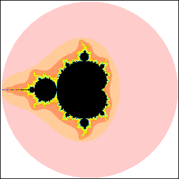

| The Mandelbrot set, M, is defined by the same iteration process used to define Julia sets, but applied in a different way. |
| Instead of using the complex plane to represent the different choices of z0 (the Dynamical Plane), it represents different values of c (the Parameter Plane). |
| To compute an image of the Mandelbrot set, for each c start with
|
| zn → zn+1 = zn2 + c |
| If the sequence does not run away to infinity, then the point c belongs to M; if the sequence does run away to infinity, then c does not belong to M. |
| As with Julia sets, we paint the pixel black if the sequence produced by the c at its center does not run away to infinity, that is, if this c belongs to M, and otherwise we paint the pixel a color determined by how quickly the sequence gets farther than 2 from the origin (and hence runs away to infinity). |
| With this applet, the Mandelbrot set iterator, from Bob Devaney's dynamical systems website at BU, we can pick a point on or around the Mandelbrot set and watch the iterates using that c value. |
| Our applet Mandelbrot-Julia Sets allows similar explorations, and variations using some other functions. |
| For reference, here is a picture of the Mandelbrot set. The pink circle is the circle of radius 2 centered at the origin. |
|  |
Return to the Mandelbrot set.